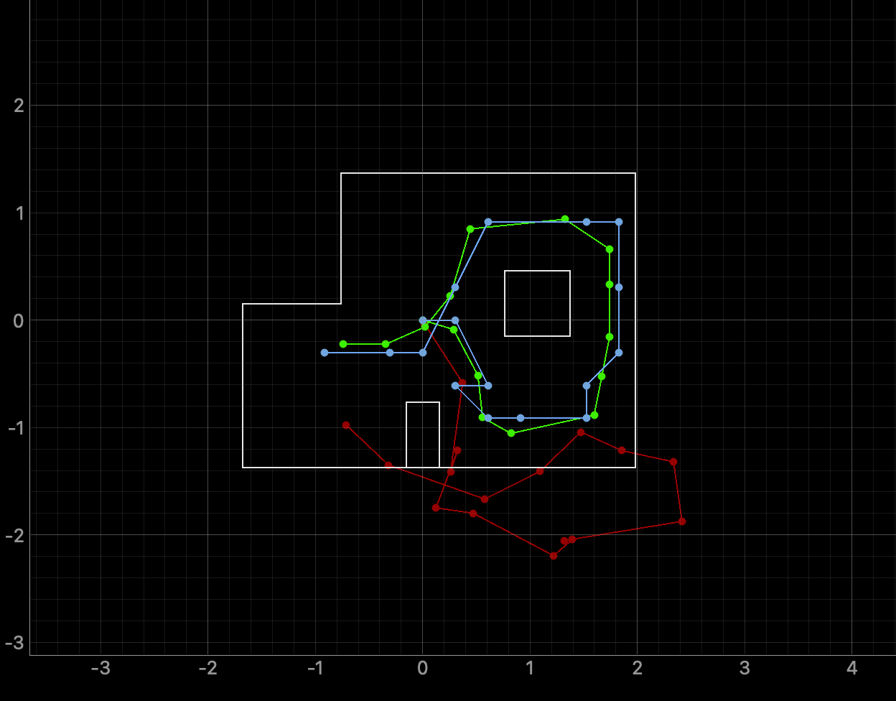
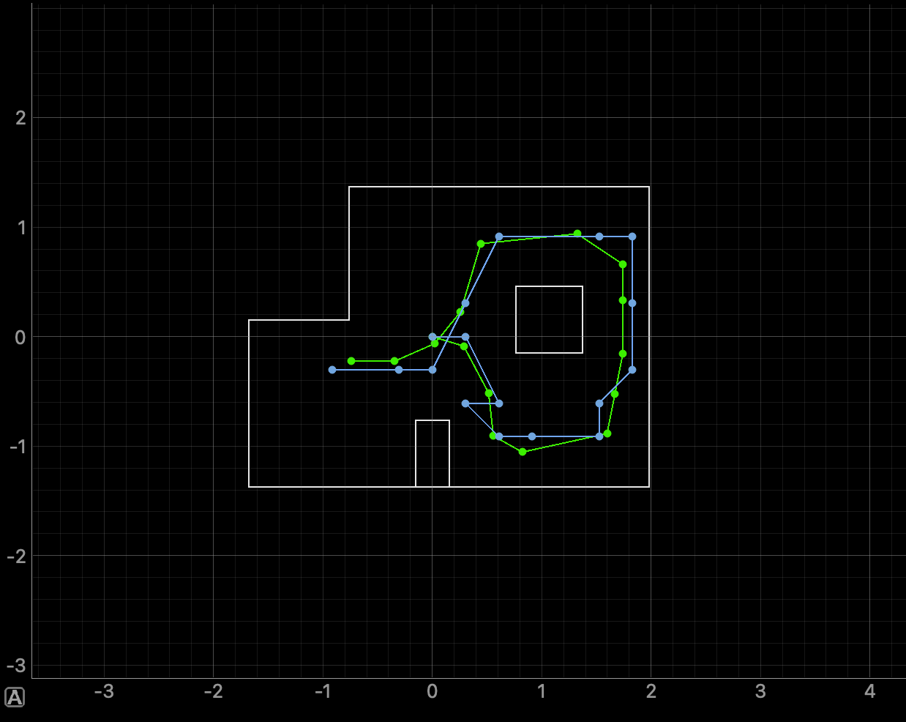

Simulation Overview
This lab implements a Bayes filter for grid localization on a virtual robot, estimating pose on a discrete 12×9×18 grid spanning [-1.68, 1.98)m in x, [-1.37, 1.37)m in y, and [-180°, 180°) in heading, using odometry as the motion model and ToF sensor sweeps as the observation model. At each time step the filter runs a prediction step followed by a sensor update, with the belief argmax taken as the estimated pose. The mapper from Lab 9 precaches ray-traced observations at every grid cell, and the five functions below implement the discrete Bayes filter directly.
compute_control
This function decomposes the displacement between two odometry poses into the three-parameter odometry motion model: an initial rotation to face the direction of travel, a translation, and a final rotation to match the new heading. All angles are normalized to [-180°, 180°) to avoid wrap-around issues during Gaussian evaluation.
def compute_control(cur_pose, prev_pose):
dx = cur_pose[0] - prev_pose[0]
dy = cur_pose[1] - prev_pose[1]
delta_rot_1 = mapper.normalize_angle(
np.degrees(np.arctan2(dy, dx)) - prev_pose[2])
delta_trans = np.sqrt(dx**2 + dy**2)
delta_rot_2 = mapper.normalize_angle(
cur_pose[2] - prev_pose[2] - delta_rot_1)
return delta_rot_1, delta_trans, delta_rot_2
odom_motion_model
Given a candidate transition from prev_pose to cur_pose and a measured control u, this function returns the probability p(x'|x, u) as the product of three independent Gaussians — one for each odometry parameter — using the noise sigmas defined in world.yaml.
def odom_motion_model(cur_pose, prev_pose, u):
rot1_u, trans_u, rot2_u = u
rot1_act, trans_act, rot2_act = compute_control(cur_pose, prev_pose)
p_rot1 = loc.gaussian(mapper.normalize_angle(rot1_act - rot1_u),
0, loc.odom_rot_sigma)
p_trans = loc.gaussian(trans_act - trans_u,
0, loc.odom_trans_sigma)
p_rot2 = loc.gaussian(mapper.normalize_angle(rot2_act - rot2_u),
0, loc.odom_rot_sigma)
return p_rot1 * p_trans * p_rot2
prediction_step
The prediction step computes the prior belief bel_bar by marginalizing over all previous cells. For each previous cell with non-negligible belief, the motion model probability is accumulated into every candidate next cell. Skipping cells below a probability threshold avoids wasting time on contributions that round to zero.
def prediction_step(cur_odom, prev_odom):
u = compute_control(cur_odom, prev_odom)
loc.bel_bar = np.zeros((mapper.MAX_CELLS_X,
mapper.MAX_CELLS_Y,
mapper.MAX_CELLS_A))
for cx in range(mapper.MAX_CELLS_X):
for cy in range(mapper.MAX_CELLS_Y):
for ca in range(mapper.MAX_CELLS_A):
if loc.bel[cx, cy, ca] < 0.0001:
continue
prev_pose = mapper.from_map(cx, cy, ca)
for nx in range(mapper.MAX_CELLS_X):
for ny in range(mapper.MAX_CELLS_Y):
for na in range(mapper.MAX_CELLS_A):
cur_pose = mapper.from_map(nx, ny, na)
p = odom_motion_model(cur_pose, prev_pose, u)
loc.bel_bar[nx, ny, na] += p * loc.bel[cx, cy, ca]
sensor_model
For a given grid cell's precached observations, this function returns the per-reading likelihoods by evaluating a Gaussian centered on each true view with the robot's actual measurement. The obs_range_data column array is flattened to a 1D array before indexing to avoid a shape mismatch when assigning scalars into prob_array.
def sensor_model(obs):
prob_array = np.zeros(mapper.OBS_PER_CELL)
obs_flat = loc.obs_range_data.flatten() # (18,1) → (18,)
for i in range(mapper.OBS_PER_CELL):
prob_array[i] = loc.gaussian(obs_flat[i], obs[i], loc.sensor_sigma)
return prob_array
update_step
The update step weights each cell's prior belief by the joint likelihood of all 18 sensor readings at that cell, then normalizes so the belief sums to one. The joint likelihood is the product of the 18 individual Gaussian probabilities returned by sensor_model.
def update_step():
for cx in range(mapper.MAX_CELLS_X):
for cy in range(mapper.MAX_CELLS_Y):
for ca in range(mapper.MAX_CELLS_A):
obs = mapper.get_views(cx, cy, ca)
p_z = np.prod(sensor_model(obs))
loc.bel[cx, cy, ca] = p_z * loc.bel_bar[cx, cy, ca]
loc.bel /= np.sum(loc.bel) # normalize
Results
The filter was run over the full pre-planned trajectory. At each time step the belief argmax (blue) tracks ground truth (green) closely, while raw odometry (red) drifts noticeably over time. The two plots below compare the trajectory with and without the odometry overlay to make the localization accuracy clearer.


Demo
The video below shows the Bayes filter running in real time in the simulator, with the belief grid updating at every step.
References
I used AI assistance to help structure the write-up and check syntax.